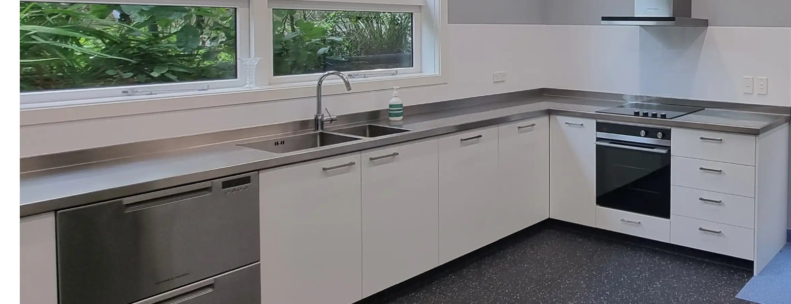
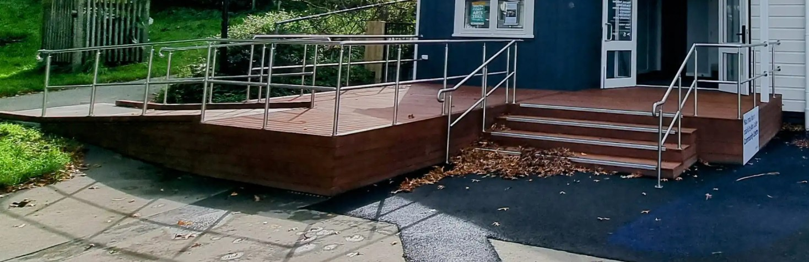
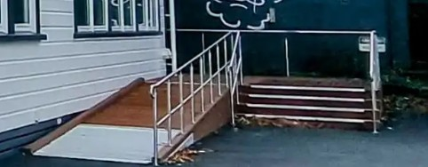
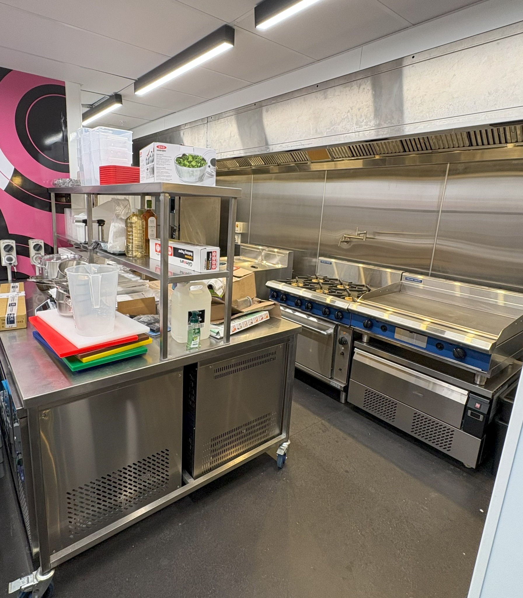
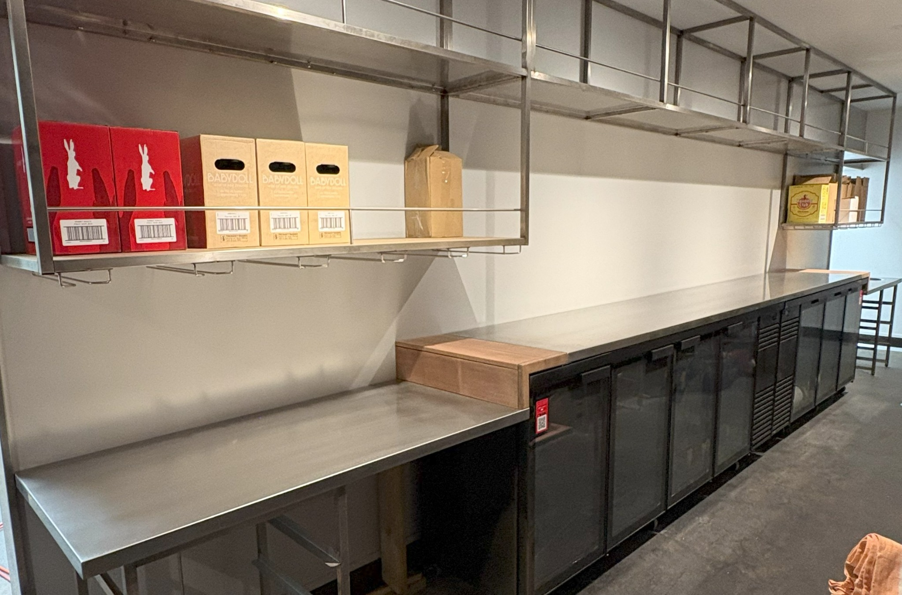
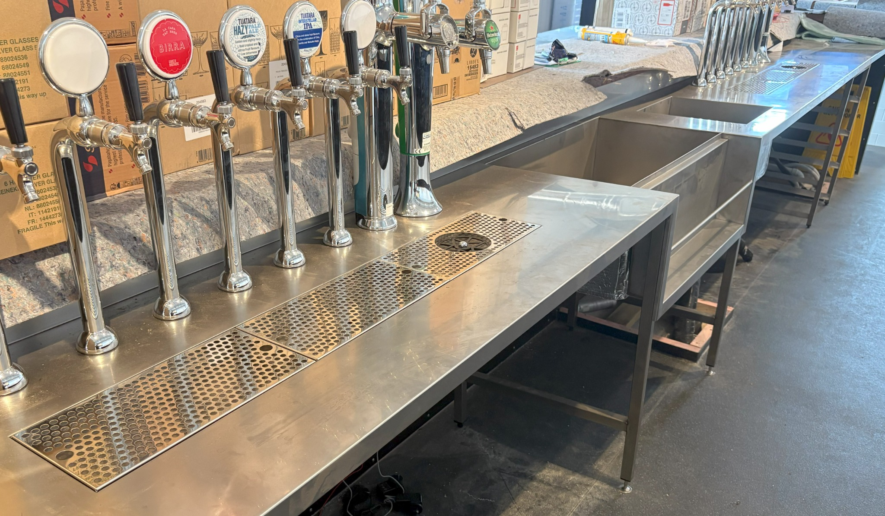
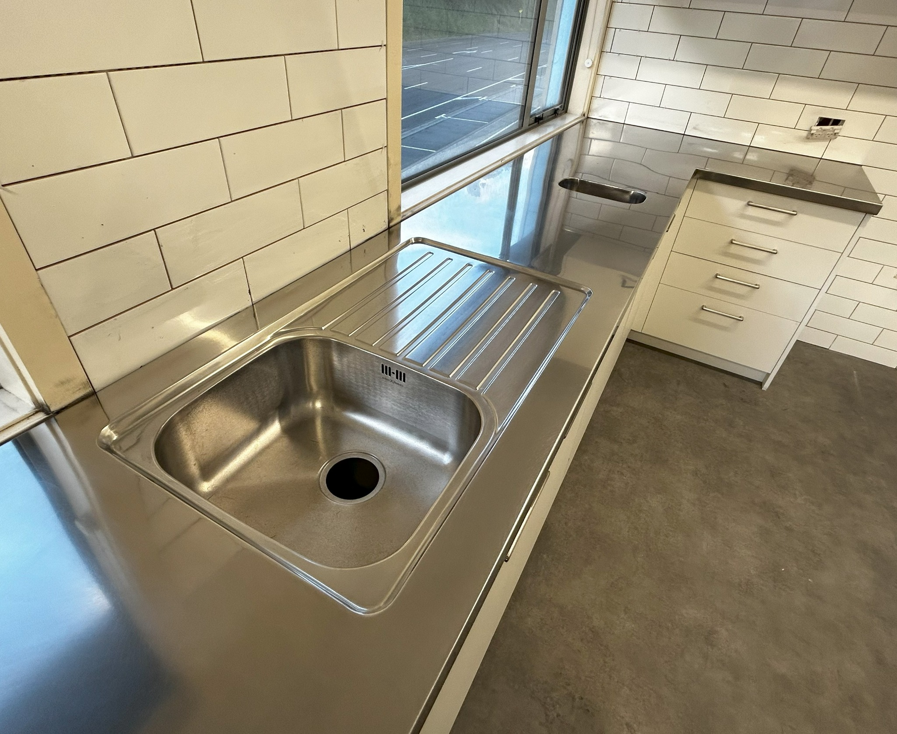
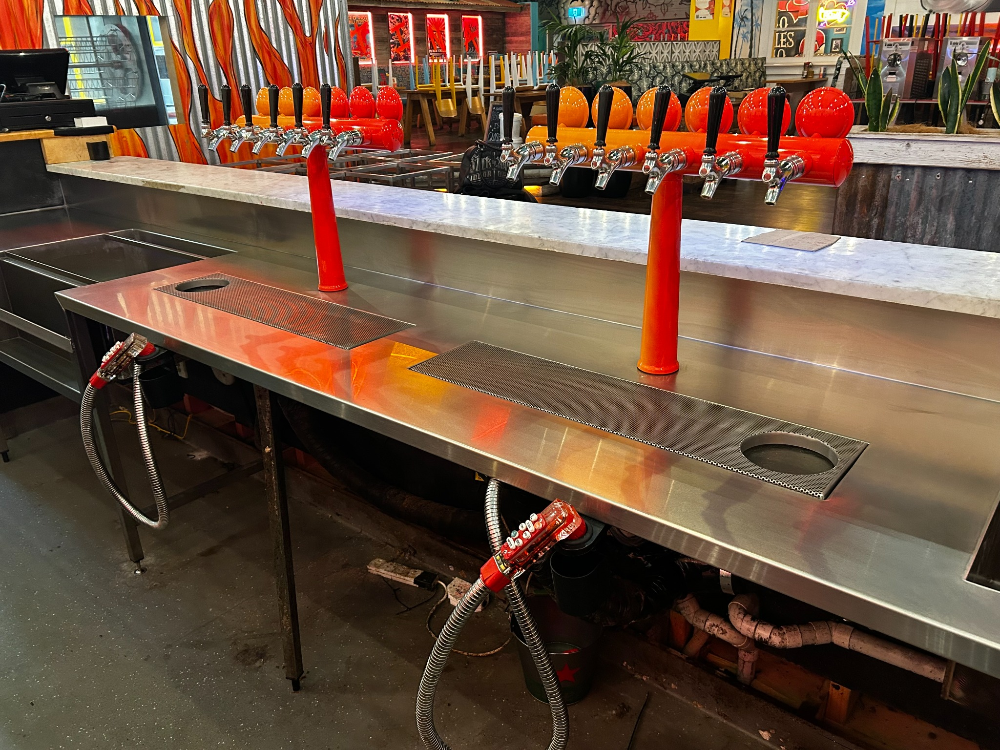
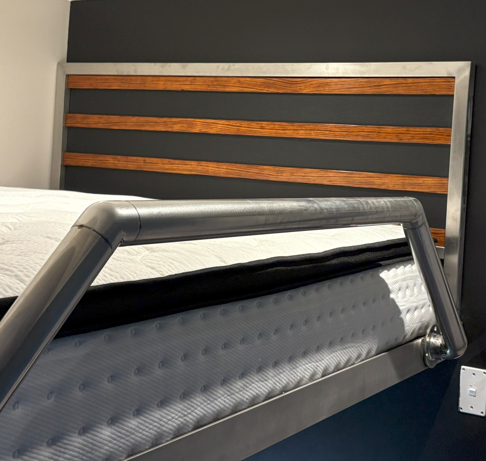
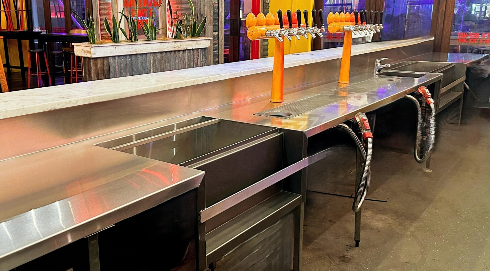

Benchtops
Custom stainless and metal benchtops made to measure.
UPPER HUTT • WELLINGTON
Custom stainless steel, steel and metal fabrication tailored to your needs, your space and your project.
REQUEST A QUOTEVIEW OUR WORKCUSTOM FABRICATION
From a one-off custom piece to a full commercial fitout, MADD Metal Fabrication builds practical, hard-wearing metalwork to suit the job. We work with stainless steel, mild steel and a wide range of other metals.
WHAT WE DO
Custom fabrication for homes, hospitality, commercial spaces and everything in between.
Custom stainless and metal benchtops made to measure.
Commercial and custom extraction hood fabrication.
Work benches, shelving, sinks and complete stainless solutions.
Bar tops, keg areas, sinks, drains and custom hospitality fitouts.
Strong, clean handrails and balustrades built for the space.
Custom gates, pillars, frames, furniture and one-off metalwork.
OUR WORK
A selection of completed fabrication projects.










WHY MADD
Every project is different. That's why we don't do one-size-fits-all. We measure, fabricate and finish each job around the way you want it to look and work.
Based in Upper Hutt, MADD Metal Fabrication takes on residential, commercial and hospitality metalwork throughout the wider Wellington region.
TALK TO US ABOUT YOUR PROJECT →START A PROJECT
Have a drawing, measurements, photo or just an idea? Get in touch and let's work out the best way to make it in metal.